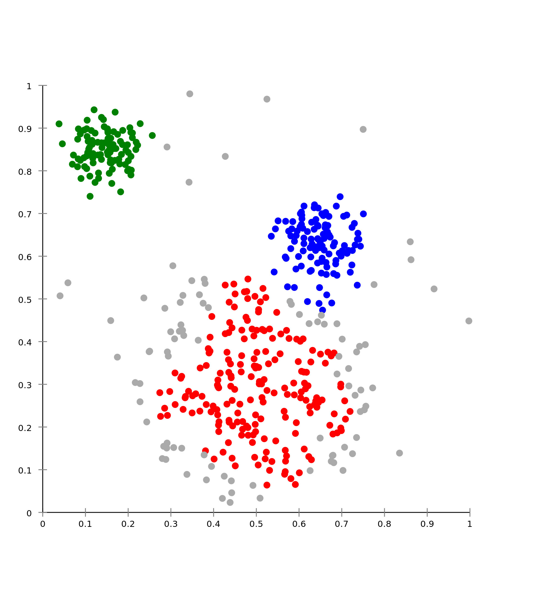
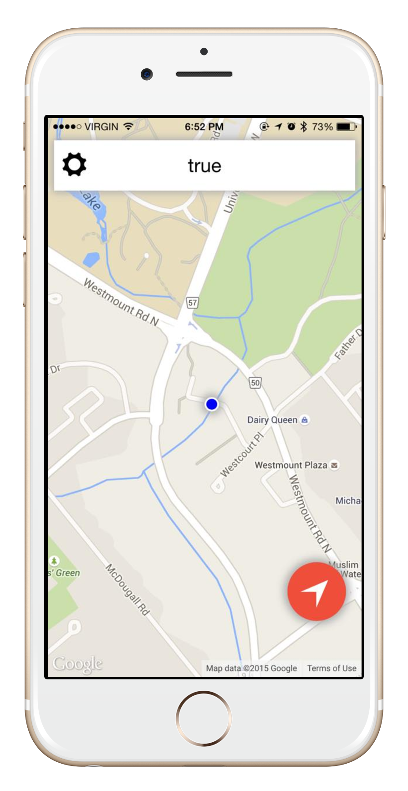
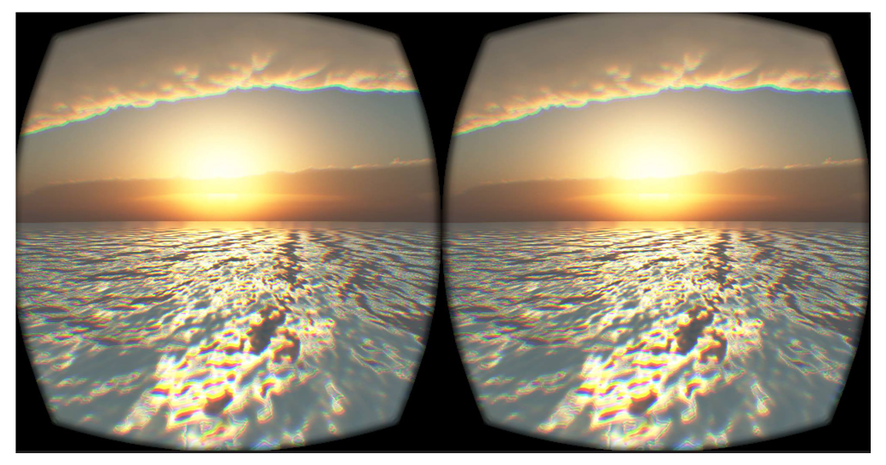
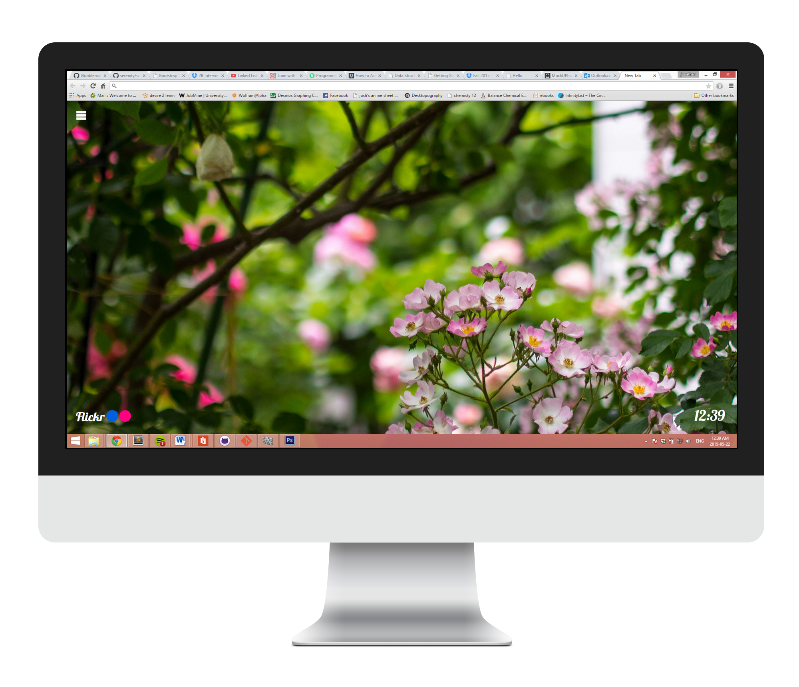

Projects
-
Machine Learning on Coursera

Recently, I have developed an interest in machine learning, data mining, and artificial intelligence. Therefore, during my work term, I started taking a course on the popular online school, Coursera.
This course has taught me the fundamentals of machine learning, and the different methods of teaching a computer to learn. In the span of a few months, I was able to learn all about supervised and unsupervised learning, classification and regression algorithms, and artificial neural networks.
See the code! -
InstaTab V2 (In Progress)

In order to better understand the concepts and algorithms taught in the machine learning course, I decided to set out and implement them for myself. I took this as an opportunity to improve on my previous personal project, InstaTab.
With the help of machine learning, InstaTab V2 will be able to improve your browsing experience by now showing you curated pictures and predict your personal taste. This is done by scaping thousands of photo tags, clustering them based on similarity, and then applying a neural network to predict which photos contain the tags that you would like. The end result will be something amazing hopefully!
See the code! -
P.E.L.V.I.S.

PELVIS (Portable Electronic Location tracher Via Internet Sockets) is an ongoing project made for taxi fleets and Uber Drivers. The concept is that taxi drivers will be able to track their location simultaneously on one large map.
We created a mobile app using Ionic which constantly tracks the user's location using Google Maps API and sends them to a running node server.
Not only this, but we designed a web interface that can show all users on one map, where they can be filtered and tracked.
See the code! -
Serenity

Serenity is a virtual environment created to help calm people with anxiety or depression. Developed during Delta Hacks, it utilizes the Oculus Rift combined with the Unity Game Engine to create a relaxing and dreamy place.
There are multiple environments that the user can choose to look at, ranging from a snow-laden mountain to a sunset beach. ALl the scenes can be changed without the user touching anything, thanks to LeapMotion. Sit back, relax, and enjoy the show!
See the code! -
InstaTab

Instatab is a chrome extension which changes the background of a new tab to fit your needs. It uses the Flickr API to find a random picture and uses it as a background. The background can be customized and changed as the user sees fit.
See the code!
Uses JQuery and JavaScript to make HTTP requests. Check it out! -
SkyRuler
This is a fun little project that I built in Computer Engineering. It uses an Arduino Uno microcontroller, 8x8 LED matrix, and 2 buttons to create a fun and interactive game.
See the code!
You are a person trying to survive the apocalyse. Giant sheets of debris constantly come falling your way. The only way of surviving is to avoid all the debris by moving side to side. Check it out! -
More projects to come!